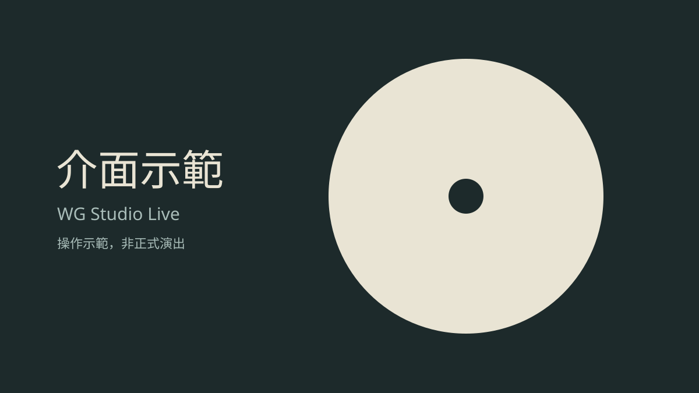

演出中
介面示範
【介面示範】錄音室現場音樂會 Live
演出者：示範樂手 A、示範樂手 B
按下「開始聆聽」即可播放
操作示範音訊，非 Binaural／Atmos 驗證素材
模式標示只代表所選的音訊版本，不代表已確認裝置的輸出方式。
已選擇：Binaural
活動資訊
這是介面示範活動，用來確認播放流程與版面。
內容不是實際演出，也不是真實售票活動。
演出時間：
節目單
- 示範曲目 一
- 示範曲目 二
- 示範曲目 三
節目單為預定內容，不代表目前正在播放的曲目。